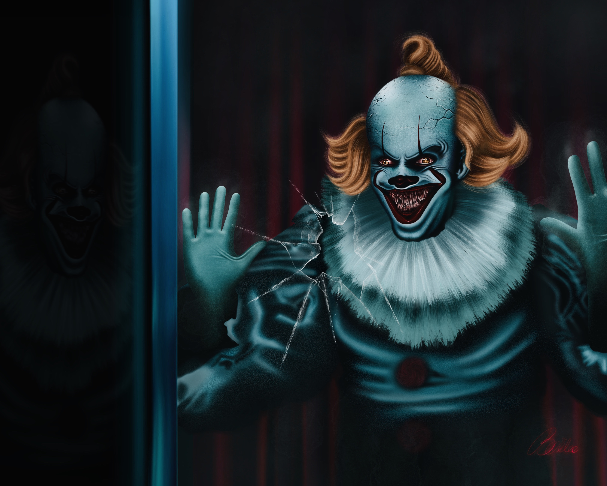
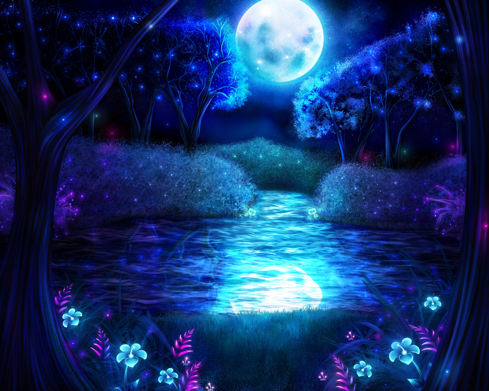
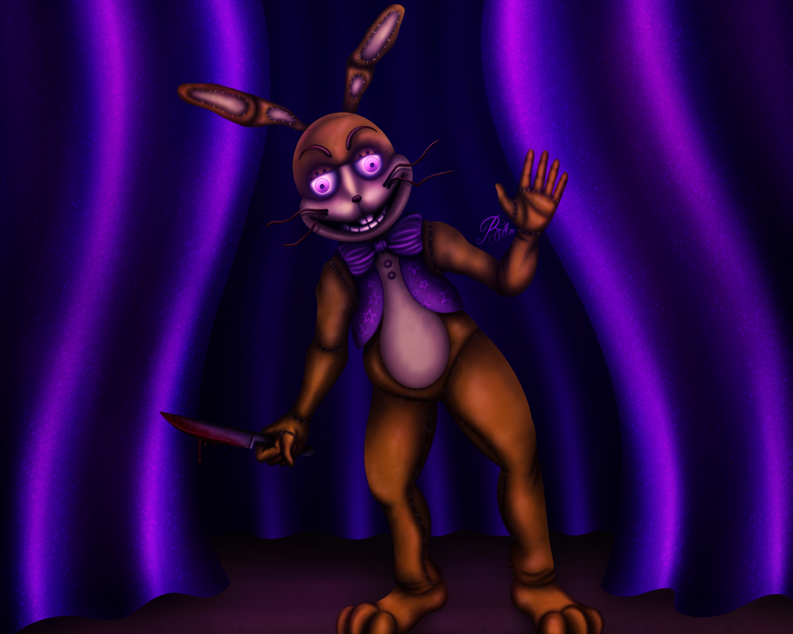

Pennywise
This art piece was my first attempt to trying realistic features and attempting extra details. At first I was just sketching the character and getting the proportions right but then after adding some basic shading the character 'Pennywise' was coming together. After I was happy with the sketching I did some flat colouring with multiple layers so I can go back and shade in later, the background was just solid black for now. Then my favourite part was next, which is the shading process, I decided to go with the darkest colours first and shade around where shadows would accurately be to add some high contrast. I did the same process with lighter colours for the highlights, brighter tones and highly saturated features. Lastly to finish everything off I included a lot of details to capture the realism look I was going for, such as textures on the face and clothing, hair strokes, glossy shines for the eyes teeth and nose. I repeated the whole process with the background then added some filters and lighting over the whole artwork to give it a finishing touch.

Fantasy Forest
This artwork was for a school project and we had to create an artwork that felt personal to us as an artist. We had a theme that we had to follow which was 'worlds away' which in my mind meant a world or an environment that we wanted to create to live in or be apart of. I've always liked the idea of an enchanted forest full of fantasy and beautiful glowing lighting to set the calming peacful mood. This feature was important to me because I wanted this fantasy forest to capture exactly what I imagined as this was supposed to help calm my anxiety, I wanted this world to be my mindful set so I put a lot of heart into this work. The final result made me feel satisfied and happy with my work I was very proud of myself with what I achieved.

Glitchtrap
This character is 'Glitchtrap' from a popular game 'Five Nights At Freddys' which invloves animatronic characters that come to life and kill! I'm a huge fan of the franchise so I decided to draw an interesting character from the games and I decided Glitchtrap. I really wanted to capture the creepy glare this character shows so I wanted to make this work realistic and draw all the details and see what I can come up with. I proceeded the same process that I did with my Pennywise work except this time I added more lighting over the character so the artwork doesn't look flat.
